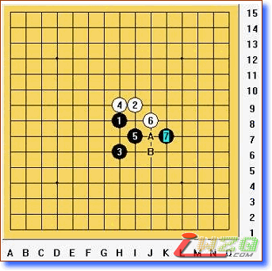
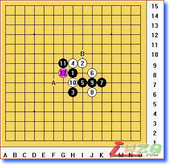
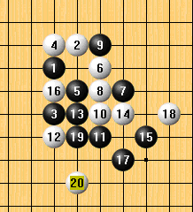
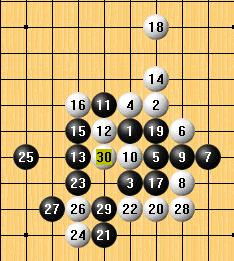

对明星必胜的一些看法
#1 对明星必胜的一些看法 作者：dream 发表时间：2007-7-16 16:37:10
早就传闻明星是必胜，经过几个月的拆解，个人觉得必胜了，因为本人没有终结者，所以不敢说一定必胜。我只能说下我在拆谱过程中对一些棋的看法。
只有明瑞 4 才是强防，其他 4 手都是不堪一击。

这个 6 是最强防，白 8 有 A ， B2 个强防，首先看下 B 点的下法

行棋到
12 手都是很正常的下法，此时黑棋有 A ， B 两个选择，现认为 2 点都必胜，其中 A 点曾经被认为必胜，但是后来又被质疑，最后又被证明必胜。为什么曾经被质疑呢？在查阅资料的过程中发现世界冠军 /*760*90，创建于2012-2-9*/ var cpro_id = 'u761865';#2 Re:对明星必胜的一些看法 作者：游戏人间 发表时间：2007-7-16 22:33:30
有错误..#3 Re:对明星必胜的一些看法 作者：dream 发表时间：2007-7-16 22:40:03
就这2个局面绝对没错,弱防不发了,不信你自己可以用黑石试防
#4 Re:对明星必胜的一些看法 作者：游戏人间 发表时间：2007-7-16 22:49:43
 嘿嘿
嘿嘿
#5 Re:对明星必胜的一些看法 作者：潇洒 发表时间：2007-7-17 10:20:12
这个怎么杀？#6 Re:对明星必胜的一些看法 作者：潇洒 发表时间：2007-7-17 10:24:37
还有这个#7 Re:对明星必胜的一些看法 作者：游戏人间 发表时间：2007-7-17 10:57:45
5楼貌似直接VCF...#8 Re:对明星必胜的一些看法 作者：行云流水 发表时间：2007-7-17 11:47:13
就这2个局面绝对没错。
完全这么下肯定没有错。嘿嘿。
#9 Re:对明星必胜的一些看法 作者：dream 发表时间：2007-7-17 12:09:08

#10 Re:对明星必胜的一些看法 作者：潇洒 发表时间：2007-7-17 13:23:15
恩。。杀了。。
#11 Re:对明星必胜的一些看法 作者：nara 发表时间：2007-7-17 14:22:58
有谁发个必胜谱啊, 好供大家学习学习啊
好供大家学习学习啊
#12 Re:对明星必胜的一些看法 作者：堂堂 发表时间：2007-7-18 3:27:06
这个呢？
#13 Re:对明星必胜的一些看法 作者：堂堂 发表时间：2007-7-18 3:43:53
好象也差不多````当初弄这个17有一路什么来着很头痛~忘了~换个下法可能简单点#14 Re:对明星必胜的一些看法 作者：daiyue 发表时间：2007-7-18 10:29:13
学习一下~#15 Re:对明星必胜的一些看法 作者：空龙 发表时间：2007-7-27 0:45:41
#16 Re:对明星必胜的一些看法 作者：空龙 发表时间：2007-7-27 0:48:38
就是页面1的那个图,28手冲J5,30下B-G7点,黑怎么杀?#17 Re:对明星必胜的一些看法 作者：游戏人间 发表时间：2007-7-27 2:12:54
提醒他干吗....楼上的孩子不厚道#18 Re:对明星必胜的一些看法 作者：dream 发表时间：2007-7-28 20:35:22
那么明显的VCF看不见？#19 Re:对明星必胜的一些看法 作者：dream 发表时间：2007-7-28 20:38:44
VCT，说错了#20 Re:对明星必胜的一些看法 作者：daiyue 发表时间：2007-7-28 21:48:17
哎呀，这个强防原来都知道了……某人浙江赛不能用这个骗人了。
16楼的白必胜了……
#21 Re:对明星必胜的一些看法 作者：南京青青子衿 发表时间：2007-7-31 16:24:14
你们好厉害噢，这么复杂的局面都能搞出来，佩服。#22 Re:对明星必胜的一些看法 作者：gerbo 发表时间：2007-12-6 15:55:47
六楼的图怎么杀 ，想请问下潇洒跟各路英雄～！
，想请问下潇洒跟各路英雄～！
#23 Re:对明星必胜的一些看法 作者：gerbo 发表时间：2007-12-6 16:36:11
对了还，还有１２楼 给出的局面黑怎么走？#24 Re:对明星必胜的一些看法 作者：深蓝妖瞳 发表时间：2007-12-10 7:53:46
这年头怎么这么多必胜啊，拜托杀干净了再来卖弄吧
#25 Re:对明星必胜的一些看法 作者：无尽 发表时间：2007-12-10 18:16:29

这个30现在发现杀法没有？如果不行13要换？这个12怎么解决？iwzq现在不能发代码了？
#26 Re:Re:对明星必胜的一些看法 作者：有志青年 发表时间：2007-12-10 20:21:00
可以发代码呀#27 Re:Re:对明星必胜的一些看法 作者：daiyue 发表时间：2007-12-11 17:05:16
引用：
原文由 无尽 发表于 2007-12-10 18:16:29 :这个30现在发现杀法没有？如果不行13要换？这个12怎么解决？iwzq现在不能发代码了？
这个30早就发现杀法了……
不过都是白棋的杀法……
#28 Re:对明星必胜的一些看法 作者：越狱行辕 发表时间：2008-6-30 20:23:49
同志们 咱不是有一打必胜谱了么#29 Re:对明星必胜的一些看法 作者：越狱行辕 发表时间：2008-6-30 21:23:36
不好意思没注意，这是两打#30 Re:对明星必胜的一些看法 作者：米兰 发表时间：2008-6-30 23:10:29
这些必胜都是理论上的东西，实战里面10个人里面恐怕只有一个人能走出来#31 Re:对明星必胜的一些看法 作者：茗弈小刀 发表时间：2008-7-1 14:36:08
很感谢，受益匪浅。明星困扰我很长时间了，一直没拆除必胜，今天才豁然开朗。希望老师多研究些让大家学习，谢谢！
#32 Re:对明星必胜的一些看法 作者：wrwak 发表时间：2009-4-9 15:42:45
有没有2打毛巾谱
#33 Re:对明星必胜的一些看法 作者：忧郁的双眼 发表时间：2009-4-9 16:46:32
潇洒发的那俩图杀不难哦
。。。